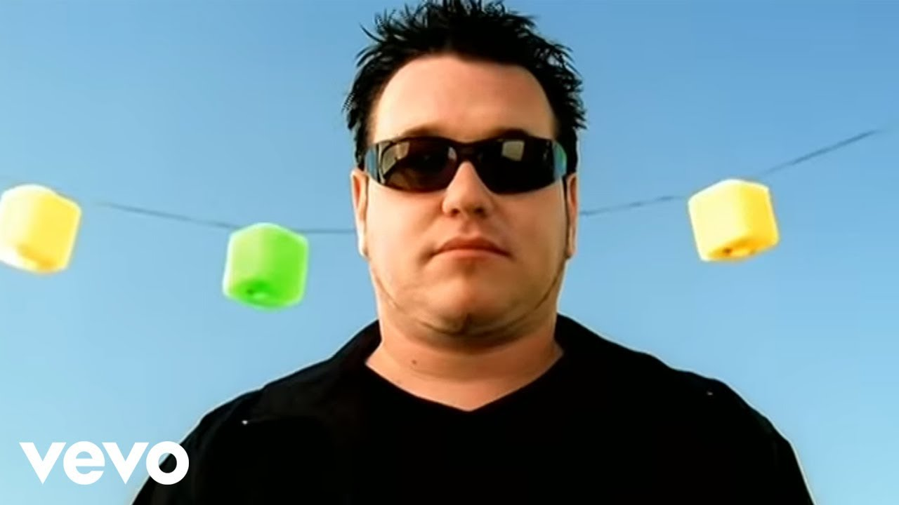

All star:
All Star is a alternative rock song from Smash Mouth released in 1999. The song is also the main theme in the movie Shrek.
The song is being used by lots of persons that make parodies out of the song.
Origin:
On the 4th of May 1999, All Star was released as the second single from Smash Mouth’s second album Astro Lounge.
The song became one of the most popular songs from Smash Mouth. On the song’s peak it reached the 4th place on the Billboard Hot 100 list in August 1999.
That same year, the comedy superhero film ‘Mystery Man’ was released with All Star as official soundtrack.
Some of the scenes in the film were used in the videoclip. In 2001 the song was used as opening sequence for the film Shrek.
